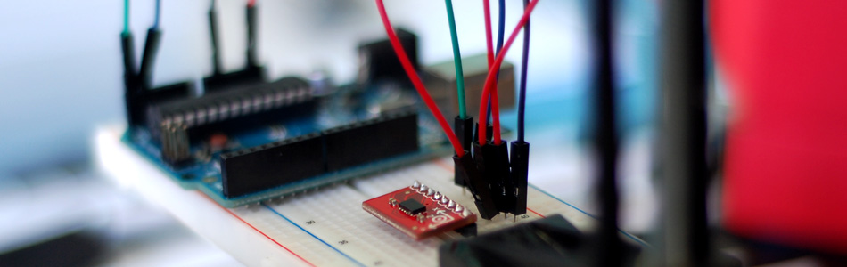

Tap, Tap, Drop. ADXL345 Accelerometer + Arduino

Out of the box, the ADXL345 is an I2C 3-axis accelerometer with user selectable sensitivity and 10-13 bit resolution (depending on sensitivity). And... It is pretty decent all around, but were not really going to spend much time talking about boring stuff today. Today, we are talking about getting the special features of the ADXL345 up and running. (tap, double tap, free fall, activity and inactivity)
These special detection features have the ability to trigger 2 interrupt pins, making the pin go HIGH the moment one of the events is sensed. You can select what events to watch for, and what interupt pin to trigger when it is sensed (I had issues with INT2, it would not reset). You can take these interrupt pins and connect them to your Arduino to trigger an interrupt. An interrupt, when sensed on the Arduino, pauses the system instantly, even if it is in the middle of something, and responds to that interrupt how ever you have it setup before returning to the normal code. Like a police officer coming down the street with its lights on... Even if you have a green light, you stop and let them go. But using interrupts is a little beyond the scope of this article, so we are going to just keep checking for these actions in code and respond to them when we see them.
Hooking it up
The ADXL345 supports both SPI and I2C, but we are just going to talk I2C here. I2C is a 2-wire serial connection, so you just need to connect the SDA (Data) and SCL (Clock) lines to your Arduino for communication. On your Arduino (everything but the mega) SDA is on analog pin 4, and SCL is on analog pin 5. On an arduino mega, SDA is digital 20, and SCL is digital 21.
Make sure both VCC and the CS pins on the sensor are connected to 3.3v. We connect CS to 3.3V to tell the sensor we will be using it as an I2C device, and not an SPI device.
{kind=link}
Code
Again, because this project is made up of many files, I am using bildr’s fancy bildrCode wrapper. All this example code will do for you now is output the name of the triggered action in the serial terminal. But I left the code in a state that should be pretty obvious how to extend it.
The special features require a lot of setup to get them working, but because this is bildr, we are going to start you off with working code, everything all setup, and spend a little bit explaining why certain things are how they are. To simplify everything in code, we will be using this Arduino library. But I have made a few small changes to it to make this a little easier to do, and to make it work a little better with other libraries, so the new library files are included in the code below.
Once the ADXL345 folder is in there, you can just go ahead and open ADXL345_Example.pde in your Arduino software, and upload it.
The parameters that are set in the code should get you going, but you will most likely find that your project requires something different. Read through the setup code, there are a lot of things that can be changed, from the force needed to activate "activity", the time before "inactivity" is triggered and the maximum length / minimum intensity of a tap. You can also completely turn off actions. I found that it was hard to trigger tap without triggering action, and double tap most often triggered tap as well. If you are up for it, the documentation on this chip is quite good, and explains a lot of the values in much greater detail (PDF).
Default Library Folder Location
On your Mac:: In (home directory)/Documents/Arduino/libraries
On your PC:: My Documents -> Arduino -> libraries
On your Linux box:: (home directory)/sketchbook/libraries
Download
If you click the download button to the right of "Arduino" you can download the whole thing as a zip, so you dont need to copy all the files.
Video
Extending this
Im sure you could come up with 101 ways to expand on this, but incase you need some help, here we go: What about a tap dance sensitive floor that caused lights to change with the rhythm of the dance? Shoes that shock you if you haven't walked in 5 min. Something as simple as a ball that you throw up and only lights up on its way down... Anything you could think of that needs or could incorporate (in)activity, free-fall, or taps, you could find a way to use this to make it happen.
Article taken from bildr.org with minor changes - I am the original author of this content